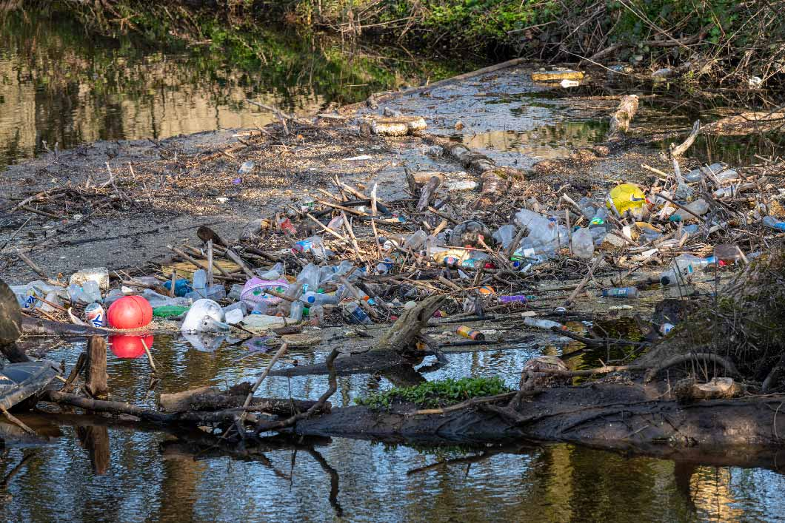

COSAS QUE CONTAMINAN EL AGUA
DESECHOS
Basura, como plásticos, microplásticos, y otros residuos sólidos
Aguas residuales, que contienen materia orgánica que consume oxígeno
Desechos químicos de fábricas e industrias
VERTIDOS DE PETRÓLEO
Derrames de combustible, como aceite y gasolina, de barcos petroleros, fábricas, granjas y ciudades
Filtraciones de petróleo desde el fondo del océano

CAUSAS DE LA CONTAMINACIÓN DEL AGUA
Son muchas las causas de la contaminación del agua, pero la actividad humana se consagra como una de las principales. El aumento de la temperatura global, el uso de insecticidas o el acto de tirar fármacos por el retrete son solo algunos de los factores que contribuyen a la contaminación hídrica. A continuación analizaremos qué impacto tiene la actividad humana en el proceso y cuáles son los principales residuos que contaminan el agua.